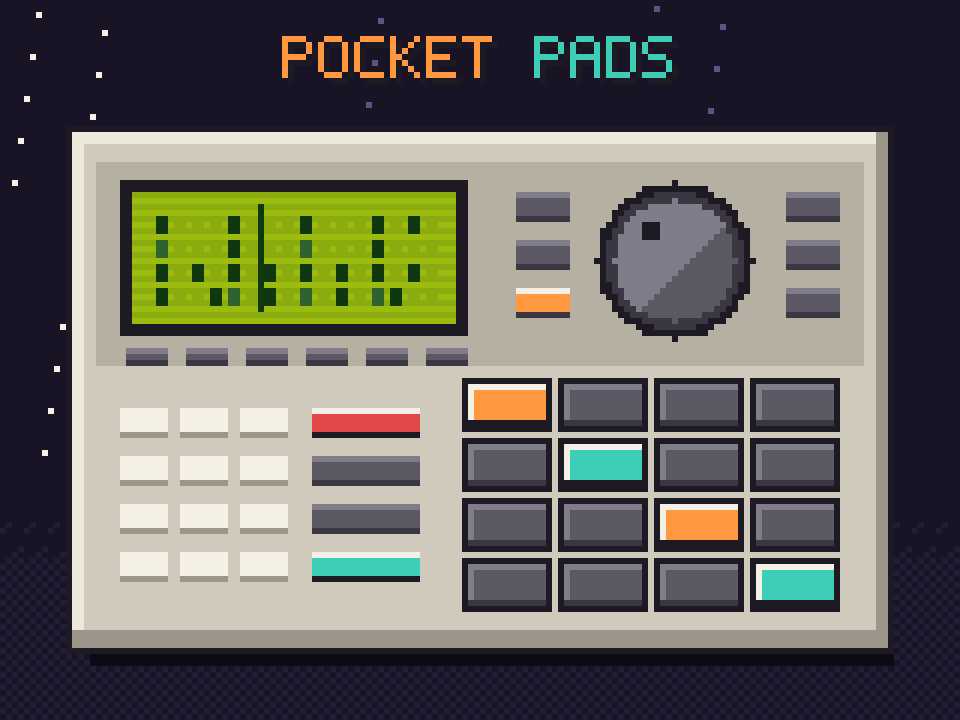
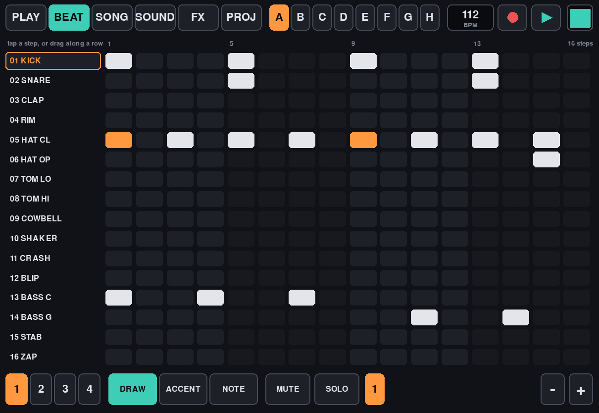
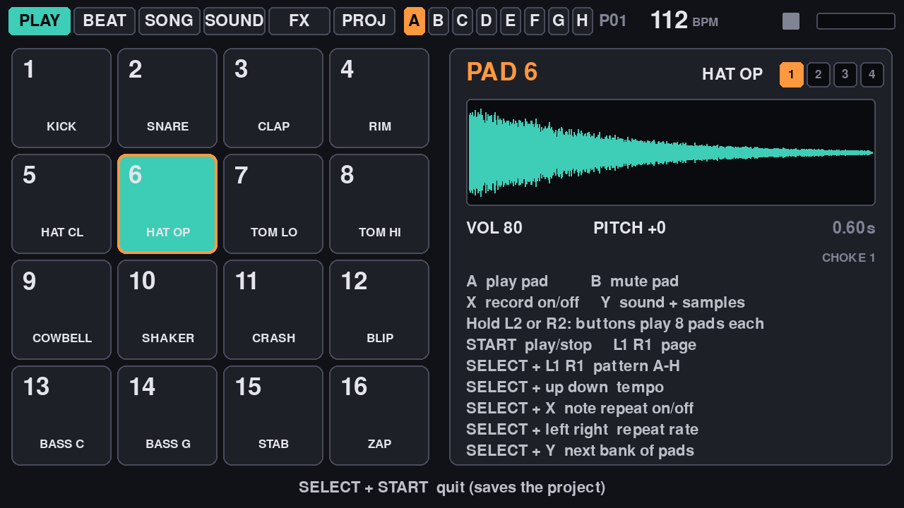
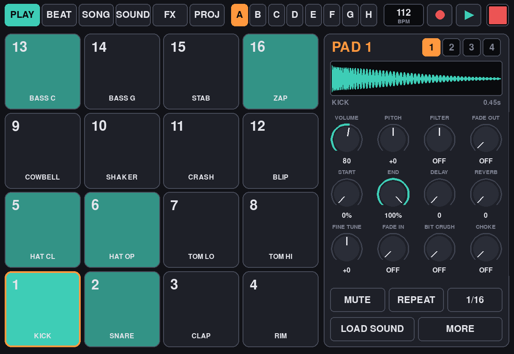
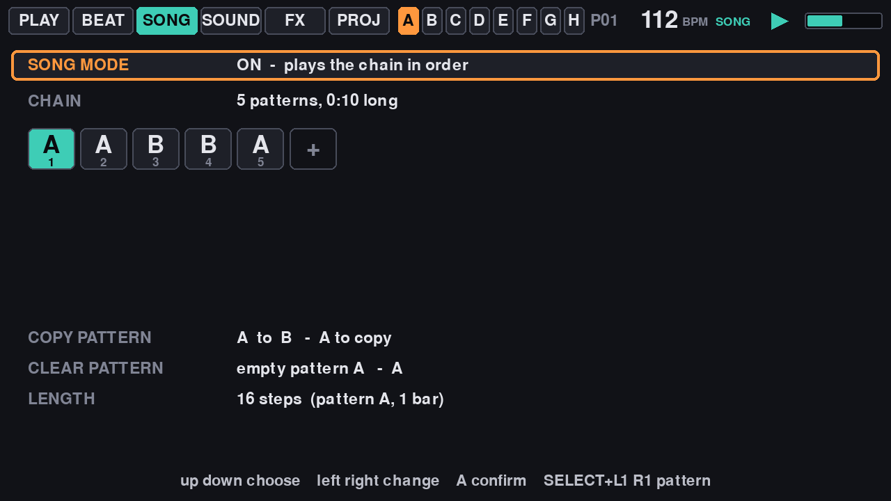

PocketPads
A 64-pad sample sequencer for the device you already have. Put sounds on pads, tap out a beat, and build it into a song.
- Handhelds
- Android
- iPad
- Windows
- Mac
Get PocketPads Read the full guide


Runs on what you have
PocketPads began on a pocket games handheld and now runs on phones, tablets and computers too. It is the same program everywhere, with the same pads, patterns and projects. Only the way you play it changes: buttons and sticks on a handheld, your fingers on a touch screen, the mouse on a computer.


Handhelds
TrimUI Smart Pro, running KNULLIWhere PocketPads started, and the version with the most hours on it. Everything is worked from the buttons, triggers and sticks, and it launches from the Ports menu.
Tried on one TrimUI Smart Pro. This is the most used version.
Android Alpha
Phones, tablets and Android handheldsOn a handheld with built-in controls it uses them. On a phone or tablet, on-screen buttons appear at the first touch. It is not in the Play Store: you install the file yourself.
How to install it
- Download the file on the Android device and open it.
- Android asks whether your browser or file manager may install apps. Allow it, then choose Install.
- Open PocketPads. Your own sounds go in
Music/PocketPads.
Needs Android 7 or newer on a 64-bit ARM device. Tried on one Retroid Pocket 4 Pro.
Windows Alpha
Desktop and laptop PCsOpens in a window with the touch layout, so every pad, knob and step can be clicked or dragged. Sound, MIDI controllers, microphone recording and MP3 files are all in it.
How to install it
- Download the zip file and extract all of it to a folder.
- Open
PocketPads.exein that folder. Windows may say it protected your PC, because the app is not signed: choose More info, then Run anyway. - Your projects and sounds are kept in
Music\PocketPads.
The least tried version. It is built and tested automatically on a Windows machine, where it starts and its tests pass, but nobody has yet played it on a real PC.
iPad
Made for touchThe touch layout was designed here: large pads for your fingers, knobs you drag, a step grid you draw on, and squares to slide a finger around in place of the sticks.
How to install it
- It is not in the App Store, so it is installed with a sideloading tool: Sideloadly, AltStore or SideStore.
- Download the file, open it in that tool and follow its steps. It signs the app with your own Apple account.
- With a free Apple account the app has to be renewed every seven days; the tool can do that for you.
Tried on one iPad Pro 13-inch, installed from Xcode. Or build it yourself with Xcode.
Mac
MacBooks and desktop MacsThe same touch layout in a window, worked with the trackpad or mouse. USB and Bluetooth MIDI controllers can be plugged in at any time.
Tried on one MacBook with Apple silicon. A ready-made download is on the way.
The Android and Windows versions are alpha versions: they are new and little tried, so expect rough edges. Whatever you play it on, please report what you find. None of them uses the internet or collects anything: see the privacy policy.
How it works
PocketPads is a drum machine in the MPC tradition. Everything follows one path, from a sound file to a finished loop.
What you can do with it
Four things, roughly in the order you would meet them. Each links to a short tutorial in the full guide. The pictures and the guide show the handheld's screens and buttons; the touch layout has the same six pages and the same controls, laid out for fingers.

Draw a beat, or play it in
Fill in steps on a grid, or switch record on and finger-drum on the buttons or the screen. Accents, swing and note repeat give it feel, and any step can carry its own note, so one pad can play a bass line.

Use any sound
Record ten seconds with the microphone and it is cut onto the pads for you. Load your own WAV or MP3 files, chop loops into pieces, stretch them to the tempo, pitch them, filter them and make them gritty. Optional sound packs add six kits and 204 public-domain recordings.
Load your own sounds · Record with the microphone · Chop a loop

From a loop to a finished track
A project holds eight patterns. Chain them in any order to make a song, then export it as a WAV file. Or start from one of four ready-made styles (ambient, techno, house and hip hop), each with its own kit, patterns and a full song to take apart.
Turn patterns into a song · Start from a style · Export a track

Play the mix itself
Hold a button to stutter the beat, stop it like a tape or sweep a filter across it, and push the two sticks, or slide a finger, for filter, tempo, echo and more. Record the result back onto a pad. A USB or Bluetooth MIDI controller plays the pads and turns their settings.
Works with GrainBrick
GrainBrick is a separate, free granular sampler for the TrimUI Smart Pro. On that handheld, PocketPads can hop over to it and back, and import the slices you make there straight onto the pads. GrainBrick itself is not modified. How the two work together.
Where it stands
This is an early version, 0.5. Everything on this page is built and working, but each version has been tried on one device at most, and the Windows one on no real PC yet, as listed above; the handheld's has had by far the most use. MIDI has been tried with one USB controller's pads and with two M-Vave pad controllers over Bluetooth, on the handheld.
PocketPads is open source under the MIT licence. It is written in Python, with pygame for the screen and buttons and NumPy for the audio.
Get PocketPads View project on GitHub
Downloads and install steps for each device are above; the README has the details.